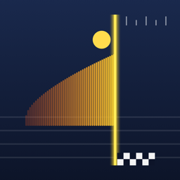

GateTape
What does GateTape do?
GateTape turns your iPhone camera into a timing gate for sprints and runs. Put the phone on a tripod beside the finish line, draw the gate line on the screen, give the start, and GateTape records when the runner's torso crosses the line. Every result keeps a photo-finish image so you can check close finishes and correct a time by hand. Timing works on one iPhone for free; one optional one-time purchase adds linked iPhones, flying starts and photo-finish export. Your full history and CSV export are always free. There is no subscription, account, server or advertising.
Set up the gate
- Mount the iPhone on a tripod in portrait, about level with the runners' chest, side-on to the lane and 3–8 m from it. The level indicator turns green when the phone is upright and still.
- Drag the yellow line onto the finish line. Drag the two blue handles so the band covers the torso (shoulders to hips), not the head or legs.
- Wait for Gate ready. GateTape learns the background for a moment; if the phone is bumped it learns it again.
- Choose the frame rate in Settings: 240 fps gives the finest timing, 120 and 60 fps also work. The fast shutter option freezes motion but needs good light.
Start the clock
- Voice + beep: GateTape says “On your marks”, then “Set”, then beeps after a random 1.6–2.4 s (adjustable). The beep is generated and timestamped by the app itself.
- Touch start: tap the start pad; the moment your finger touches the screen is used. A delay correction is available in Settings.
- Clap / whistle: the microphone listens for a clap, whistle or starting pistol. Enter the starter's distance in Settings to correct for the time sound takes to travel (about 3 ms per metre).
- Start phone and flying start gate (Pro): a second iPhone gives the start, or acts as a camera gate at the start line for flying sprints.
Several iPhones (Pro)
Tap the antenna button on the Timer screen. Choose a role on each phone: Finish (hosts and keeps the reference clock), Start or Split (an extra camera gate, e.g. at 10 m). Phones connect directly over Wi-Fi or Bluetooth; no internet is needed. Each phone measures its clock offset to the finish phone many times a minute and shows the estimated error; the target is under 10 ms. Keep the phones within a few tens of metres and allow Local Network access when asked.
Photo finish
Each column of the photo-finish image is one camera frame taken exactly at the gate line, so left to right is time. Open a result, drag the cursor onto the torso and tap Use cursor time to correct the time by hand; Revert restores the automatic time. Viewing is free; exporting the image with its time axis is part of Pro.
Athletes, splits, laps and history
- Add athletes in the Athletes tab or from the athlete picker. After each run GateTape moves to the next athlete, so a group can run in turn.
- Split gates add intermediate times. Laps mode (Settings) times repeated crossings of the same line.
- Results are grouped into sessions. Export any session, or all sessions, as CSV (free).
About accuracy
- GateTape estimates the crossing between camera frames, so the result is finer than one frame. It is a training tool, not certified competition timing.
- Accuracy depends on frame rate, light, contrast between the runner and the background, camera position and the start method. A strongly leaning runner may read a few milliseconds late; check close finishes on the photo-finish image.
- Each mark shows its estimated uncertainty (±ms).
- Long sessions at 240 fps warm the phone. The camera pauses after a few idle minutes (Settings › Pause camera when idle); tap Resume to continue.
Free and GateTape Pro
- Free: camera gate on one iPhone, all on-device start methods, athletes, splits and laps, photo-finish viewing and correction, CSV export and your full history (every session).
- GateTape Pro (one-time, non-consumable in-app purchase): linked start, split and finish iPhones, flying starts and photo-finish image export. Sessions are never hidden or deleted without Pro. Family Sharing is included.
- Restore: Settings › Restore purchase, signed in with the same Apple Account. Refunds are handled by Apple at reportaproblem.apple.com.
Permissions
- Camera: needed for the timing gate. If it is off, turn it on in the Settings app › GateTape › Camera.
- Microphone: only for the clap / whistle start.
- Local Network: only for linking iPhones.
Contact
한국어
GateTape는 iPhone 카메라를 스프린트 계측 게이트로 바꿔 주는 앱입니다. 결승선 옆 삼각대에 iPhone을 세우고 화면에 게이트 선을 맞춘 뒤 출발 신호를 주면, 선수의 몸통이 선을 지나는 순간을 기록합니다. 모든 결과에 사진 판정 이미지가 남아 근소한 차이를 확인하고 직접 보정할 수 있습니다. iPhone 한 대로 하는 계측은 무료이고, 선택형 한 번 구입으로 여러 대 연동·플라잉 출발·사진 판정 내보내기가 열립니다. 전체 기록과 CSV 내보내기는 항상 무료입니다. 구독·계정·서버·광고는 없습니다.
- 게이트 설정: 세로로 삼각대에 세우고(가슴 높이, 레인 옆 3~8 m), 노란 선을 결승선에, 파란 띠를 몸통(어깨~엉덩이)에 맞춥니다. ‘게이트 준비됨’이 뜨면 시작합니다. 240fps가 가장 세밀하며 120·60fps도 됩니다.
- 출발 방식: 음성+신호음(“제자리에–차렷–삑”, 앱이 직접 만든 신호음의 시각 사용), 터치 출발(손가락이 닿는 순간), 박수·호루라기·출발 총성 감지(설정에서 출발 신호까지 거리를 넣으면 소리 도달 시간 보정), Pro에서는 출발 쪽 iPhone·플라잉 출발 게이트.
- 여러 대 연동(Pro): 타이머 화면의 안테나 버튼에서 결승·출발·구간 역할을 고릅니다. 인터넷 없이 Wi-Fi/Bluetooth로 직접 연결하고, 각 기기가 결승 쪽과의 시계 차이를 계속 측정해 추정 오차를 보여 줍니다(목표 10ms 미만). ‘로컬 네트워크’ 권한을 허용하세요.
- 사진 판정: 이미지의 세로줄 하나가 게이트 선에서 찍힌 한 프레임입니다. 커서를 몸통에 맞추고 ‘커서 시간 사용’으로 보정, ‘되돌리기’로 자동값 복원. 보기는 무료, 이미지 내보내기는 Pro입니다.
- 선수·구간·랩·기록: 측정마다 다음 선수로 넘어갑니다. 구간 게이트, 랩 모드, 세션별 CSV 내보내기(무료)를 지원합니다.
- 정확도: 프레임 사이 시각을 추정하는 훈련용 도구이며 공인 경기 계측이 아닙니다. 프레임 속도, 밝기, 배경과의 대비, 카메라 위치, 출발 방식에 따라 달라지며 각 기록에 추정 오차(±ms)가 표시됩니다. 오래 240fps로 쓰면 기기가 뜨거워지므로 대기 중에는 카메라가 자동으로 멈춥니다.
- 무료와 Pro: 무료는 한 대 계측, 기기 내 모든 출발 방식, 선수, 구간·랩, 사진 판정 보기·보정, CSV, 모든 세션이 보이는 전체 기록. GateTape Pro(한 번 구입, 비소모성)는 여러 대 연동, 플라잉 출발, 사진 판정 내보내기. Pro가 없어도 세션은 숨겨지거나 지워지지 않습니다. 복원은 설정 › ‘구매 복원’. 환불은 Apple(reportaproblem.apple.com)에서 처리합니다.
- 권한: 카메라(계측 게이트), 마이크(박수·호루라기 출발에만), 로컬 네트워크(여러 대 연동에만).